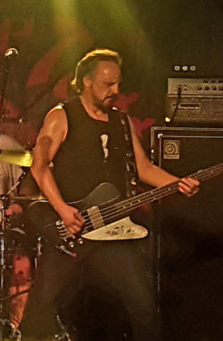

- Let There Be Rock é o quarto álbum de estúdio da banda de rock australiana, AC/DC. Foi lançado na Austrália em março de 1977, e relançado de forma internacional em julho de 1977
Foi marcado não apenas pela sua qualidade, mas também por ser a última aparição de Mark Evans no baixo.
O álbum foi lançado em DVD em 1997 com o nome de Let There Be Rock: The Movie. Antes, em julho de 1977, foi lançada a versão internacional do álbum, diferindo da original devido à retirada da música "Crabsody In Blue", sendo substituída por
uma re-edição de "Problem Child", do álbum Dirty Deeds Done Dirt Cheap
Duração do album: 40:19 (Austrália) || 41:01 (Internacional)
Ronald Belford Scott ( 9 de julho de 1946 — 19 de fevereiro de 1980) foi um cantor e compositor australiano nascido na Escócia. Ele ficou mundialmente conhecido
por ser vocalista e compositor da banda de rock australiana AC/DC de 1974 a 1980.
Em 2006, a revista Hit Parader colocou Scott como o quinto melhor vocalista de heavy metal de todos os tempos.
Angus McKinnon Young (31 de março de 1955, em Glasgow, Escócia) é um guitarrista e compositor, conhecido por ser guitarrista solo, compositor, líder e co-fundador
da banda de hard rock australiana AC/DC.
No ano de 2003, foi introduzido juntamente de Malcolm Young, Brian Johnson e outros membros do AC/DC no Rock and Roll Hall of Fame.
Foi considerado o 24.º melhor guitarrista de todos os tempos pela revista norte-americana Rolling Stone. Um dos maiores guitarristas da história do Rock and Roll e considerado pela grande maioria o maior riffer de todos
os tempos.
Angus McKinnon Young (31 de março de 1955) é um guitarrista e compositor, conhecido por ser guitarrista solo, compositor, líder e co-fundador da banda AC/DC.
No ano de 2003, foi introduzido juntamente com outros membros do AC/DC no Rock and Roll Hall of Fame.
Foi considerado o 24.º melhor guitarrista de todos os tempos pela revista norte-americana Rolling Stone.
 Mark Evans (2 de março de 1956) é um baixista australiano, mais conhecido como um dos primeiros baixistas do AC/DC, onde participou de cinco discos entre 1975
e 1977. Mark saiu da banda por desentendimentos com o guitarrista Angus Young.
Em 2011, Mark lançou o livro: Dirty Deeds: My Life Inside / Outside of AC / DC, que conta os bastidores das gravações com o AC/DC, além de suas memórias dos shows com o grupo.
Phillip Norman Hugh Rudd, nasceu com o nome de Hugh Phillip Norman Witschke Rudzevecuis. Nascido em 19 de Maio de 1954, é um baterista australiano.
Ocupou o cargo de 1975 até 1983 e novamente de 1994 até a data presente na banda AC/DC. Após a saída do baixista Mark Evans em 1977, Phil se tornou o único membro australiano na banda.
Mark Evans (2 de março de 1956)é um baixista australiano, mais conhecido como um dos primeiros baixistas do AC/DC, onde participou de cinco discos entre 1975
e 1977. Mark saiu da banda por desentendimentos com o guitarrista Angus Young.
Em 2011, Mark lançou o livro: Dirty Deeds: My Life Inside / Outside of AC / DC, que conta os bastidores das gravações com o AC/DC.
 Ronald Belford Scott ( 9 de julho de 1946 — 19 de fevereiro de 1980) foi um cantor e compositor australiano nascido na Escócia. Ele ficou mundialmente conhecido
por ser vocalista e compositor da banda de rock australiana AC/DC de 1974 a 1980.
Ronald Belford Scott ( 9 de julho de 1946 — 19 de fevereiro de 1980) foi um cantor e compositor australiano nascido na Escócia. Ele ficou mundialmente conhecido
por ser vocalista e compositor da banda de rock australiana AC/DC de 1974 a 1980.
 Angus McKinnon Young (31 de março de 1955, em Glasgow, Escócia) é um guitarrista e compositor, conhecido por ser guitarrista solo, compositor, líder e co-fundador
da banda de hard rock australiana AC/DC.
Angus McKinnon Young (31 de março de 1955, em Glasgow, Escócia) é um guitarrista e compositor, conhecido por ser guitarrista solo, compositor, líder e co-fundador
da banda de hard rock australiana AC/DC.
 Phillip Norman Hugh Rudd, nasceu com o nome de Hugh Phillip Norman Witschke Rudzevecuis. Nascido em 19 de Maio de 1954, é um baterista australiano.
Ocupou o cargo de 1975 até 1983 e novamente de 1994 até a data presente na banda AC/DC. Após a saída do baixista Mark Evans em 1977, Phil se tornou o único membro australiano na banda.
Phillip Norman Hugh Rudd, nasceu com o nome de Hugh Phillip Norman Witschke Rudzevecuis. Nascido em 19 de Maio de 1954, é um baterista australiano.
Ocupou o cargo de 1975 até 1983 e novamente de 1994 até a data presente na banda AC/DC. Após a saída do baixista Mark Evans em 1977, Phil se tornou o único membro australiano na banda.